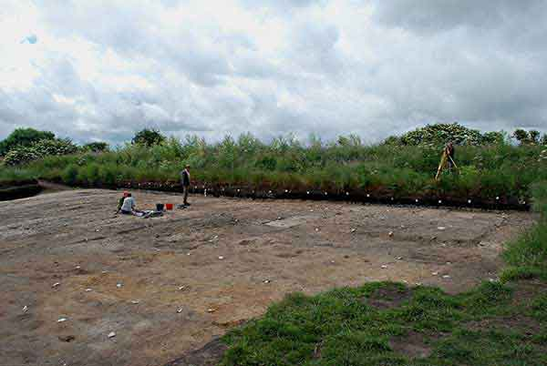

About Star Carr
Star Carr is a Mesolithic (Middle Stone Age) archaeological site, dating to around 9000 BC, just centuries after the end of the last Ice Age. It has become world famous in the archaeological world due to the preservation of artefacts found buried deep in the peat.
Learn more Latest News
Star Carr named Current Archaeology's Research Project of the Year
Life beside the lake wins the prestigious award for 2020. Read more at the Current Archaeology website.
Star Carr monographs now published
Two volumes are available to buy or download from the White Rose Press.
More news